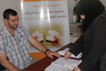
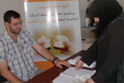
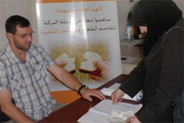

تأسست جمعية البركة للتنمية الاجتماعية رسميا برقم 1588 بتاريخ 16-9-2010 م، والتي تهدف للتأهيل العلمي والمهني للمحتاجين ليتمكنوا من العمل و الاكتفاء مادياً ,ومساعدتهم مادياً ومعنوياً، وذلك اقتداء بعمل رسول الله صلى الله عليه وسلم مع السائل حيث اشترى له فأساً وأمره بالاحتطاب فعاد وقد كفاه الله تعالى وأغناه عن السؤال
إتقان المهنة: بالاعتماد على المدربين الأكفاء
أخلاقيات المهنة: تم إعداد و إلقاء دورات أخلاقيات العمل من قبل كادر علمي متخصص في الإدارة
